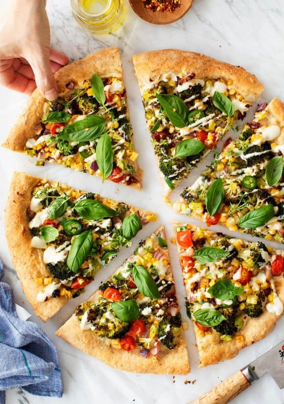

Pizza

Description
Pizza, dish of Italian origin consisting of a flattened disk of bread dough topped with some combination of olive oil, oregano, tomato, olives, mozzarella or other cheese, and many other ingredients, baked quickly—usually, in a commercial setting, using a wood-fired oven heated to a very high temperature—and served hot.
One of the simplest and most traditional pizzas is the Margherita, which is topped with tomatoes or tomato sauce, mozzarella, and basil. Popular legend relates that it was named for Queen Margherita, wife of Umberto I, who was said to have liked its mild fresh flavour and to have also noted that its topping colours—green, white, and red—were those of the Italian flag.
Ingredients
- 1 small head broccoli, florets chopped into small pieces, top of stalk diced (½ cup)
- ⅓ cup halved cherry tomatoes
- kernels from 1 ear fresh corn
- ¼ cup coarsely chopped red onion
- ½ jalapeño, thinly sliced
- 4 oil-packed sun-dried tomatoes, diced
- extra-virgin olive oil, for drizzling and brushing
- 1 (16-ounce) ball of pizza dough
- ½ cup fresh basil leaves
- 2 tablespoons fresh thyme leaves
- pinches of red pepper flakes
- sea salt and freshly ground black pepper
- Cashew Cream
Steps
- Preheat the oven to 450°F.
- In a medium bowl, combine the broccoli, tomatoes, corn, onion, jalapeño, and sun-dried tomatoes and drizzle with olive oil and pinches of salt and pepper. Toss to coat and taste. The vegetables should be well-seasoned and well-coated with the olive oil so that the vegetables are flavorful throughout the pizza.
- Stretch the pizza dough onto a 14-inch pizza pan. Brush the outer edges of the dough lightly with olive oil and spoon a few scoops of cashew cream onto the center of the dough, just enough to spread it into a thin layer. Distribute the vegetables onto the dough.
- Bake 15 minutes, or until the crust is golden, cooked through, and the broccoli is tender and roasted. Remove from the oven and drizzle generously with the cashew cream (if your cashew cream is too thick to drizzle, stir in a little water). Top with the fresh basil, fresh thyme, and pinches of red pepper flakes.